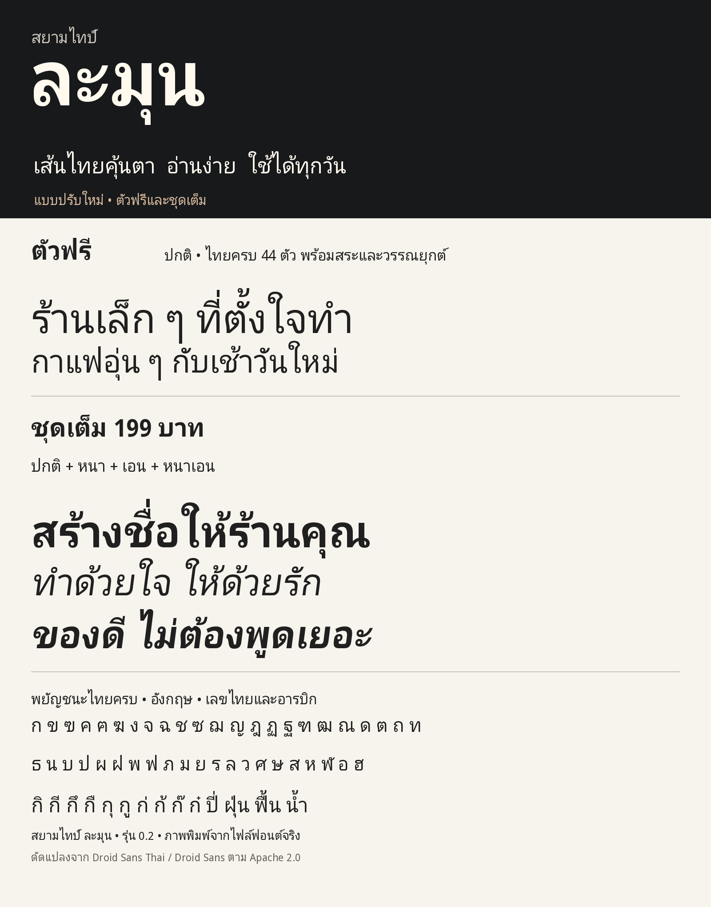

ตัวฟรี
0 บาท
- ตัวปกติ 1 แบบ
- ไทยครบ 44 ตัว พร้อมสระและวรรณยุกต์
- อังกฤษ ตัวเลขไทยและอารบิก
- TTF / OTF / WOFF2
- ใช้ได้ทั้งส่วนตัวและเชิงพาณิชย์
เส้นไทยคุ้นตา อ่านง่าย ใช้ได้ทุกวัน
ดาวน์โหลดตัวปกติฟรีดูตัวอย่างทั้ง 4 แบบได้ด้านล่าง

แตก ZIP แล้วเปิดโฟลเดอร์ fonts บน Windows ให้เลือกไฟล์ TTF คลิกขวาและเลือก Install ส่วน macOS ให้เปิดด้วย Font Book แล้วเลือก Install จากนั้นปิดและเปิดโปรแกรมออกแบบใหม่
ติดตั้ง TTF หรือ OTF เพียงรูปแบบเดียว เพื่อไม่ให้ชื่อซ้ำ เลือกชื่อ SIAMTYPE Lamun หรือ สยามไทป์ ละมุน ในโปรแกรม
ตัวฟรีใช้ในงานส่วนตัวและงานเชิงพาณิชย์ได้ ชุดเต็มเป็นค่าแบบเพิ่มเติม ไม่ใช่ค่าปลดล็อกสิทธิ์เชิงพาณิชย์ สิทธิ์ตาม Apache 2.0 ยังคงใช้กับทั้งสองชุด
ปรับสัดส่วน ช่องไฟ และรูปแบบเอนจาก Droid Sans Thai และ Droid Sans ไม่ใช่ฟอนต์ที่วาดใหม่ทั้งหมด ไม่มีส่วนของซูเปอร์มาร์เก็ตหรือมหานิยมในไฟล์นี้